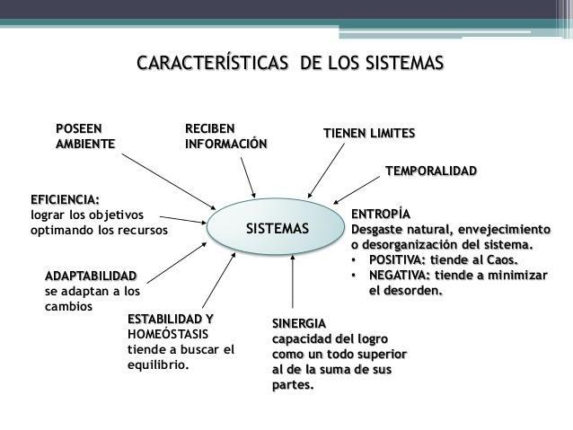

En la teoría general de sistemas, se reconocen varios tipos de sistemas que pueden ser clasificados según diferentes criterios. Algunas de las clasificaciones comunes de sistemas incluyen:
- Según su naturaleza:
- Sistemas físicos: Son sistemas que involucran componentes físicos tangibles. Ejemplos incluyen una máquina, un edificio, un automóvil, etc.
- Sistemas biologicos: Son sistemas que involucran organismos vivos y sus interacciones con el entorno. Ejemplos incluyen un ecosistema, un organismo multicelular, un sistema nervioso, etc.
- Sistemas abstractos o conceptuales: Son sistemas que no tienen una manifestación física tangible. Ejemplos incluyen sistemas matemáticos, sistemas económicos, sistemas sociales, etc.
- Según su complejidad:
- Sistemas simples: Son sistemas con interacciones y componentes básicos, cuyo comportamiento puede ser fácilmente comprendido. Ejemplo: un péndulo.
- Sistemas complejos: Son sistemas con múltiples componentes interconectados cuyo comportamiento global puede ser difícil de predecir debido a la no linealidad y las retroalimentaciones entre los elementos. Ejemplo: el clima, el mercado financiero.
- Según su origen:
- Sistemas naturales: Son sistemas que se encuentran en la naturaleza y no han sido creados por el ser humano. Ejemplo: un ecosistema, el sistema solar.
- Sistemas artificiales o creados por el hombre: Son sistemas que han sido diseñados, construidos o modificados por el ser humano para cumplir un propósito específico. Ejemplo: un sistema de gestión de inventario, un sistema de transporte público.
- Según su grado de interacción con el entorno:
- Sistemas cerrados: Son sistemas que no interactúan con su entorno y no reciben entradas externas. Ejemplo: un reloj de péndulo.
- Sistemas abiertos: Son sistemas que interactúan con su entorno, reciben entradas y producen salidas. Ejemplo: un ser vivo, una empresa.
Características de los sistemas
